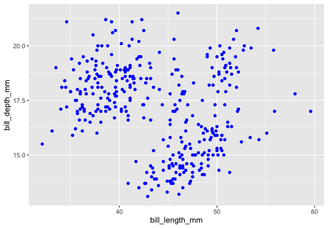
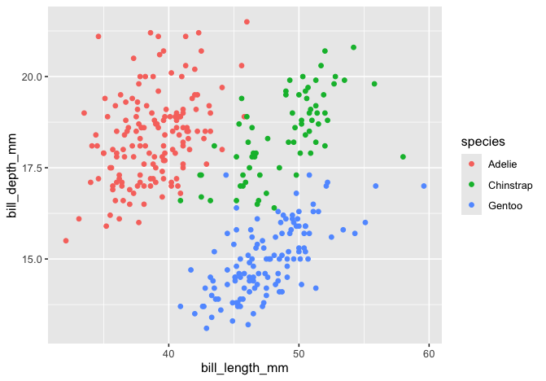
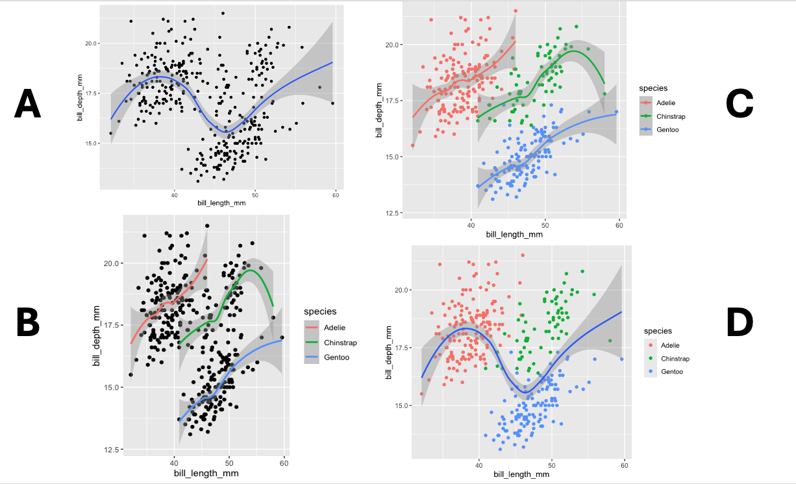
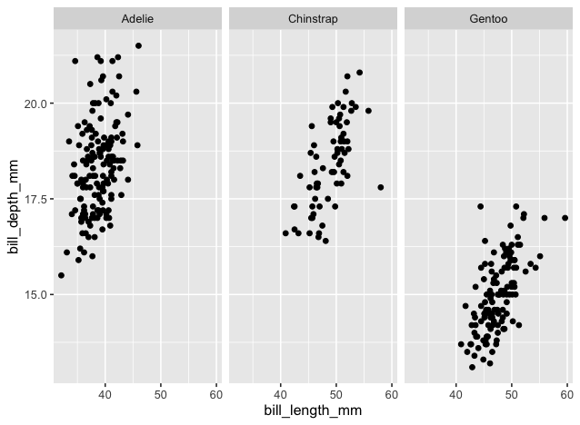

FUNDAMENTALS OF DATA VISUALIZATION 🎨
Setup 🔧
Remember that we have to install packages only once, but we always have to call them into our workspace using library().
1. Defining the required elements
Every plot we create with ggplot2 requires the ggplot() function. When we run ggplot() on its own, it creates an empty, gray square—a blank canvas for us to do our “art”! Let’s see it in action.
We need to add some arguments to ggplot() if we want to plot data. Arguments are the information we give to a function to change how the function behaves.
Let’s plot body_mass_g and flipper_length_mm. To do so, we will need the following:
the
dataargument to supply a dataset andthe
mappingargument to connect variables from the dataset to visual properties (i.e., aesthetics) of the plot.
Your turn!
Fill in the following code chunk to supply the data penguins and map body_mass_g to the x-axis and flipper_length_mm to the y-axis.
We still have not plotted the data, though. The function geom_point() will add a scatter plot layer to our plot.
Your turn!
Copy your code from above and then add + geom_point(). Then, run the code chunk to see the result.
The + operator combines ggplot2 functions. Without the +, R doesn’t know that you want to add geom_point() to the plot you started with ggplot(). Missing the + operator or putting it on a new line are common errors people receive when using ggplot2.
Template for
ggplot():ggplot(data = DATAFRAME, mapping = aes(x = VARIABLE, y = VARIABLE)) + geom_point()
ggplot()initiates a blank canvas where we can create our plotdatasupplies the datasetaes()determines which variable should be on the x-axis and which on the y-axisgeom_point()adds a scatter plot layer
Your turn!
Using the template above, create a scatter plot to show the relationship between bill_length_mm (x-axis) and bill_depth_mm (y-axis). Write your code from scratch without copying and pasting 🙂
Your turn!
Let’s rewrite our code above to (a) apply the pipe |> workflow and (b) get rid of the warning error by dropping NAs in the variables bill_length_mm and bill_depth_mm.
2. Customizing plots by changing aesthetics
Visual aspects like the color, shape, and size are called aesthetics.
The following code, for example, changes the color aesthetic for the scatter points. Run the code to see the result.
Your turn!
Edit the code below to turn the points “maroon” instead.
ggplot2 recognizes a range of color names. Run the function colors() to see a list of options.
The following table contains some aesthetics that you can use with geom_point():
| Aesthetic | What it controls | Use |
|---|---|---|
color |
Color | Quoted name of a color, e.g., “blue” |
size |
Size | Number |
shape |
Shape (circle, triangle, etc.) | An integer between 0 and 25 |
alpha |
Transparency | A number between 0 and 1
Setting |
Your turn!
Try the following arguments one by one so you can see their effects: alpha = 0.6, shape = 18, and size = 3. You can add these arguments to geom_point() using commas in between.
3. Mapping aesthetics to variables in the dataset
The following plots both alter the color of the points but differ in an important way. What’s the difference?
| Plot 1 | Plot 2 |
|---|---|
 |
 |
To create the second plot, we need to create an aesthetic mapping between the variable species and color.
Here’s a first attempt to color the points by species. Unfortunately, it doesn’t work.
Aesthetic mappings like these need to be created inside aes(), so we need to add color = species inside aes().
Your turn!
Fill in the following code to create a plot that maps species to color.
We put the color aesthetic inside geom_point(). What do you think will happen if we move color = species inside ggplot()? See it yourself!
Important
Any aesthetics in ggplot() will apply to all the geoms that follow.
Earlier, you learned how to set shape so that all the points had the same shape. To map a variable to shape, add the mapping in aes().
Your turn!
Fill in the code to map species to shape.
4. Layering geoms
So far, we have learned how to use geom_point() together with ggplot(), but with ggplot, we can add multiple geoms to one plot. Let’s add a regression line to our scatter plot by adding geom_smooth().
What do you think will happen if we add color = species inside aes() in ggplot()? 🕵️♀️ Hint: Any aesthetics in ggplot() will apply to all the geoms that follow.

Global aesthetics—applying aesthetics to all geoms that follow
This one applies the color aesthetic mapping to both geom_point() and geom_smooth().
Local aesthetics—applying aesthetics to a specific geom
This one applies the color aesthetic mapping only to geom_point().
This one applies the color aesthetic mapping only to geom_smooth().
Regression line
geom_smooth defaults to the loess method for the regression line, but you can change that to the linear model by changing the method argument to lm.
5. Faceting with facet_wrap() and facet_grid()
Let’s create a plot that looks like this:

The small plots representing the different species are called facets. The facet_wrap() function creates facets.
Your turn!
Fill in the code below to facet the plot by island.
If you want to create facets based on two categorical variables, then you can use facet_grid() and indicate which variable you want in the columns and rows.
Your turn!
Fill in the code below to facet the rows by species and columns by island.
6. Labeling with labs()
Our plot could use some additional finesse, like a title. To add a title to a plot, use the function labs():
Labs() can change many other labels, including the x and y axis labels.
For other labels, see the documentation by running ?labs().
Here is a figure that illustrates some of the arguments of labs(), such as tag, subtitle, and caption.

7. Application! 🏁
Work in pairs or small groups to create the following figure. Use the code chunk below to type your answer.


Caution
BEFORE YOU CLOSE THIS PAGE, SAVE YOUR PROGRESS:
Right-click anywhere on the page
Select Print
Choose Save as PDF
Credits
This page contains materials from Posit Academy (2025).